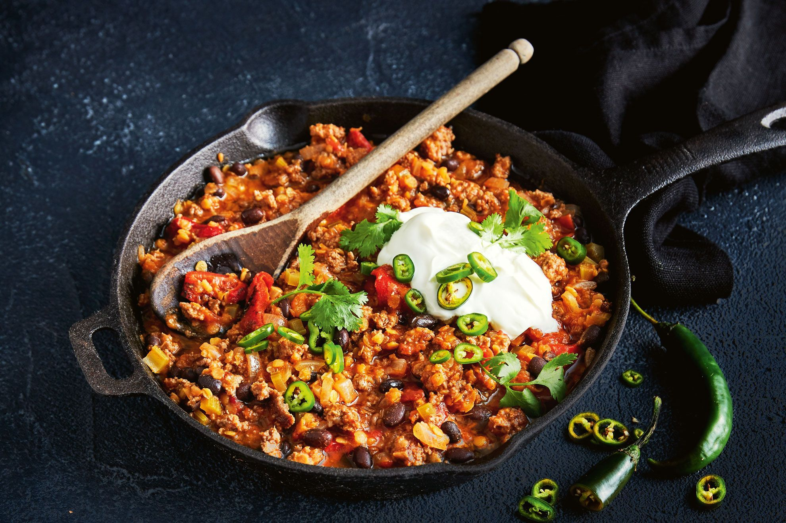

Chili con carne
Chili con carne (also spelled chilli con carne or chile con carne and shortened to chili or chilli.
Spicy stew containing chili peppers (sometimes in the form of chili powder), meat (usually beef), tomatoes, and often pinto beans or kidney beans.
Other seasonings may include garlic, onions, and cumin. The dish originated in northern Mexico or southern Texas.

- 1 tbsp oil
- 1 onion, diced large
- 1 red pepper
- 2 garlic cloves
- 1 tsp hot paprika powder
- 1 tsp paprika
- 1 tsp ground cumin
- 500 lean ground beef
- 400g can chopped tomatoes
- 400g can red kidney beans
- salt to taste
- steamed rice
- Start by cooking rice in a rice cooker
- Prepare your vegetables. Chop 1 large onion into small dice, about 5mm square. The easiest way to do this is to cut the onion in half from root to tip, peel it and slice each half into thick matchsticks lengthways, not quite cutting all the way to the root end so they are still held together. Slice across the matchsticks into neat dice.
- Cut 1 red pepper in half lengthways, remove stalk and wash the seeds away, then chop. Peel and finely chop 2 garlic cloves.
- Start cooking. Put your pan on the hob over a medium heat. Add 1 tbsp oil and leave it for 1-2 minutes until hot (a little longer for an electric hob).
- Add the onion and cook, stirring fairly frequently, for about 5 minutes, or until the onion is soft, squidgy and slightly translucent.
- Tip in the garlic, red pepper, 1 heaped tsp hot chilli powder or 1 level tbsp mild chilli powder, 1 tsp paprika and 1 tsp ground cumin.
- Give it a good stir, then leave it to cook for another 5 minutes, stirring occasionally.
- Brown 500g lean minced beef. Turn the heat up a bit, add the meat to the pan and break it up with your spoon or spatula. The mix should sizzle a bit when you add the mince.
- Keep stirring and prodding for at least 5 minutes, until all the mince is in uniform, mince-sized lumps and there are no more pink bits. Make sure you keep the heat hot enough for the meat to fry and become brown, rather than just stew.
- Make the sauce. Crumble 1 beef stock cube into 300ml hot water. Pour this into the pan with the mince mixture.
- Add a 400g can of chopped tomatoes. Tip in ½ tsp dried marjoram, 1 tsp sugar and add a good shake of salt and pepper. Squirt in about 2 tbsp tomato purée and stir the sauce well.
- Simmer it gently. Bring the whole thing to the boil, give it a good stir and put a lid on the pan. Turn down the heat until it is gently bubbling and leave it for 20 minutes.
- Check on the pan occasionally to stir it and make sure the sauce doesn’t catch on the bottom of the pan or isn’t drying out. If it is, add a couple of tablespoons of water and make sure that the heat really is low enough. After simmering gently, the saucy mince mixture should look thick, moist and juicy.
- Drain and rinse a 410g can of red kidney beans in a sieve and stir them into the chilli pot. Bring to the boil again, and gently bubble without the lid for another 10 minutes, adding a little more water if it looks too dry.
- Taste a bit of the chilli and season. It will probably take a lot more seasoning than you think.
- Now replace the lid, turn off the heat and leave your chilli to stand for 10 minutes before serving. This is really important as it allows the flavours to mingle.
- Serve with soured cream and plain boiled long grain rice.